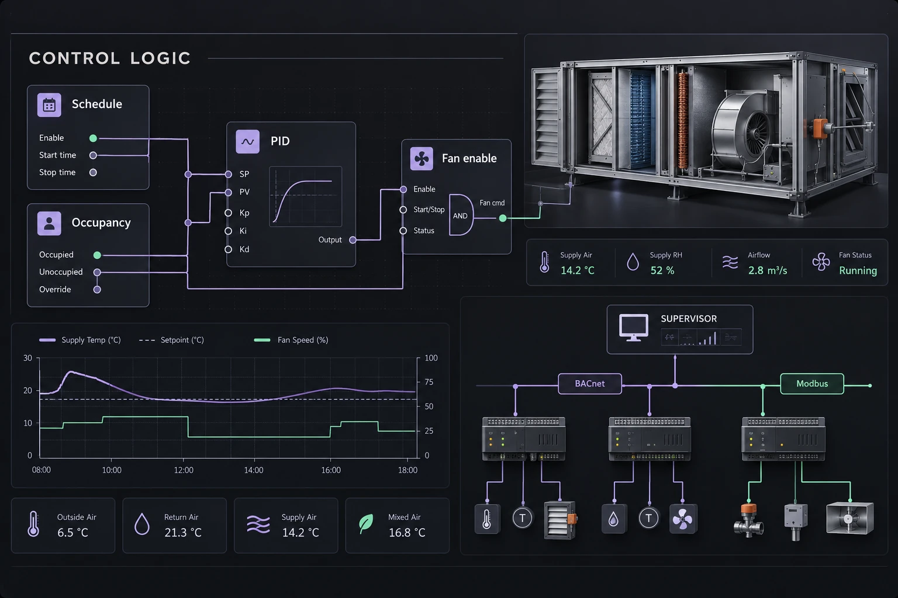
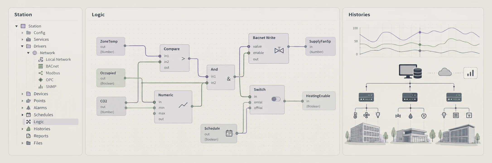

DDC applications
Equipment routines, mode logic, interlocks and reusable templates for the selected controllers and available engineering tools.
 S O L U T I O N SLet’s talk ↗
S O L U T I O N SLet’s talk ↗Control logic and system integration built around the approved sequence.
Discuss your project ↗
Equipment routines, mode logic, interlocks and reusable templates for the selected controllers and available engineering tools.
Equipment hierarchy, schedules, alarms, histories and graphics integration in the agreed Niagara, Honeywell, Alerton or other supported environment.
BACnet and Modbus mapping, packaged equipment interfaces, and agreed Ignition or API workflows with defined read/write intent.
Documented applications and integrations ready for coordinated field verification.
View supported platforms ↗Station structure, equipment organization, control components, schedules, histories, alarm services, and point metadata for the agreed Niagara scope.
Project-specific controller logic, equipment templates, interlocks, and reusable routines matched to the selected hardware and available engineering tools.
Device discovery coordination, object or register mapping, scaling, units, status handling, and agreed read/write permissions.
Point databases, equipment hierarchy, alarm routing, trends, user-role requirements, and operator workflows in the target platform.
Offline review where supported, simulated inputs where appropriate, logic walkthroughs, and an organized record of test findings.
Versioned application files, station or system backups as supported, change notes, deployment coordination, and rollback planning.
Define and implement agreed application extensions, data interfaces, and API workflows. Confirm platform capabilities, access, licensing, and test requirements before development.
Develop the agreed tag structure, HMI views, alarms, histories, and integration workflows for Ignition projects, including energy and electrical monitoring applications.
We build the agreed control applications and supervisory configuration around a consistent point model. The result is organized for deployment, operator use and the next engineer who needs to support it.

Check object or register references, scaling, engineering units, writable values and unavailable-data behavior. Preserve the distinction between a command, a status and a proven physical response.
Walk through the logic against the approved sequence. Use offline or simulated checks where supported, document exceptions and identify which checks require connected field equipment.
Coordinate the deployment window, versioned backups and rollback responsibilities. Record what changed, what was tested and what remains for field verification.
Approved sequences, point schedules, and platform versions
Controller models, integration maps, and required licenses
Authorized engineering access and an agreed release process
File formats, review rounds and final acceptance responsibilities are defined with your team at the start.
Verify the system response ↗JACE and Supervisor station engineering, wiresheet logic, tagging, alarms, histories, schedules, and licensed driver integration.
Final scope follows the installed version, licensing and approved access.